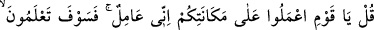
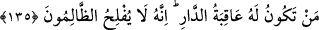
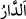

135. De ki: Ey kavmim! Elinizden geleni yapın! Ben de yapacağım! Yurdun
(dünyanın) sonunun kimin lehine olduğunu yakında bileceksiniz. Gerçek şu ki,
zalimler iflah olmazlar.
Ey Habibim, Mekkelilere “de ki: “Ey kavmim, gücünüzün yettiğini yapın.”
Elinizden ne geliyorsa ve gücünüz neye yetiyorsa sonuna kadar kullanın. Yapmakta
olduklarınızı yapmaya devam edin, küfür ve düşmanlığınızda sabit olun.
“Ben de yapacağımı yapıyorum.” Bana emrolunduğu şekilde sabrediyor, İslâm üzere
olmakta sebat gösteriyorum ve salih amelleri yapmaya devam ediyorum.
Bu emir, istiâre yoluyla tehdit içindir. Tehdide sebep olan şer, emrolunan vacibe
benzetilmiştir ki o mutlaka meydana gelecektir.
et-Te’vîlâtü’n-necmiyye’de şöyle denilmektedir: “Gücünüz yettiğini yapın.” Yani
yaratılışınıza göre yapın, demektir. Bunun benzeri şu ayettir : “De ki: Herkes kendi
karakterine göre hareket eder.” (el-İsrâ, 17/84)
“Yakında (dünya) yurdu(nu)n sonunun kime ait olacağını bileceksiniz.” Âyetteki (  ) harfi istifham için olursa cümlenin mânâsı şöyle olur: “Allah’ın bu dünyayı kendisi
) harfi istifham için olursa cümlenin mânâsı şöyle olur: “Allah’ın bu dünyayı kendisi
için yarattığı övülen âkıbet hangimize olur.” bileceksiniz.” (  ) harfinin ism–i mevsul
) harfinin ism–i mevsul
olduğu kabul edilirse o zaman cümlenin anlamı şöyle olur: “Güzel akıbetin kimin için
olduğunu bileceksiniz.”
(  ) “yurt”, dünya yurdudur. Bu yurt için asıl olan akıbet, onun hayırla
tamamlanmasıdır. Kötü akıbet ise günahkarların asıllarını bozmalarının sonucudur.
“Muhakkak ki zulmedenler” yani kâfirler “asla iflah olmazlar.” Arzu ettikleri
neticeyi asla elde edemezler.
Gerçekten zafer ve kurtuluş bulamaz zalimler, yani kâfirler.
Keşfü’l-esrâr müellifi şöyle der: Şimdi görünüz, dünya nereye gidiyor, kurtuluş
devleti kime ulaşıyor. Görünüz, kanadı kırık dervişleri keramet sarayına nasıl çağırırlar
ve ikbal sahibi efendileri, hocaları pişmanlık zindanına nasıl sürerler?
Sabret! Bugün cüz olanları kül bulacaksın
Sabret! Bugün diken olanları yarın gül göreceksin
Dünyada ahireti kazanmak için
Ne zamana kadar bu dünyadan cennet yapacaksın?
Kurtuluş, ancak ilim ve amelde; dünyayı, tembelliği ve hataları terk etmektedir.
Hikaye edilir ki bir fakir büyüklerden birisinin yanına vardı. Evinde hiçbir şey
bulamayınca: “Sizin hiçbir şeyiniz yok mu?” diye sordu. O zat şöyle cevap verdi: “Evet,
bizim iki yurdumuz var. Biri emniyet yurdu, diğeri korku yurdu. Elimize geçen malları